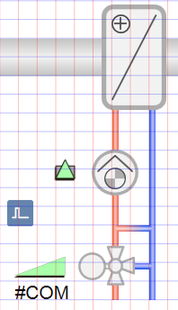
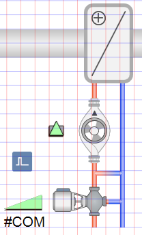

Exchanging a 2D Symbol for a 2D+ Symbol
The graphics page is drawn using 2D symbols (pumps and valves) and must be changed to 2D+.
- An object reference is assigned to the symbol.
- In the Mode group, conduct one of the following actions:
- Click Design
 . Previously rotated objects appear in the default direction.
. Previously rotated objects appear in the default direction. - (Optional) Click Test
 . In this case, the object does not display in its true size.
. In this case, the object does not display in its true size. - In the Options tab, select Symbol Options.
- In the drop-down list, select the 2D+ library.
- Select the corresponding symbol in the graphic.
- Right-click the symbol and select Symbol Instance > Replace.
- The Library Browser opens with the 2D+ library.
- In the Library Browser, select New symbol.
- Click New symbol.
- The symbol is exchanged in the graphic.
Exchange 2D Symbols for Pump and Valve | |
2D Symbols | 2D+ Symbols |
 |  |